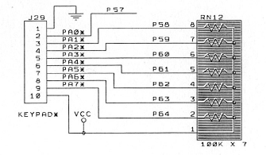

| Previous Appendix | Next Appendix | Index | Search the Text |
This project will interface a 16 button keypad to the 68HCS12. When a key is pressed, it will be displayed on the 7-segment display. This project assumes the DRAGON12 development board will be used. The Dragon12-Plus board has a built-in keyboard with different wiring, but connected to the same port. The display interface was described earlier in Time Multiplexed Displays.
The keypad being used is manufactured by Grayhill and is part of the Series 96 keypads. This particular keypad has the 12 standard telephone keys plus an additional column of keys labeled A, B, C, and D.
The documentation for the keypad shows the mounting requirements and the electrical connection. An eight-wire cable is used to connect the keypad to the (port A) connector on the DRAGON12 board.
A table in the documentation shows the switch matrix. Pins 1 through 4 connect to the rows while pins 5 through 8 connect to the columns.
Pins 1 through 8 of the keypad are connected to Port A pins 0 through 7 respectively. The DRAGON12 provides a 10 pin connector, J29 for Port A, with pins 1 and 10 (power and ground) missing. This gives the correct 8 connections to the keypad. The board provides pull-up resistors for pins 1 through 7.

We will be using Port A to drive the rows (PA0 through PA3) and will have Port A pins 4 through 7 configured as inputs to read the levels on the columns. The pull-up resistors on pins 1 through 3 will have no effect. The effective schematic is shown here:
We read the keypad a row at a time by driving each of PA0 through PA3 low, one at a time. Any key in the selected row that is depressed will cause one of PA4 through PA7 to be forced low. The following illustration shows PA1 being driven low and switch "5" being pressed. This causes PA5 to be forced low.
There are several potential problems we must solve in the code that reads the keyboard. First, if the user presses and holds a key down, this must be interpreted as a single keystroke -- Auto-repeating keys is a possibility, but we won't be implementing that here. This means that we must not only look for key depressing but also for key releasing so that we can differentiate between a single and multiple depressions.
The second problem comes from the first. The keys are mechanical devices and the contacts can bounce. Bouncing appears as a fast sequence of press and release. This could fool our program into thinking that there have been two or more depressions when only one was intended. We must de-bounce the keypad. This is the same technique that must be used for all mechanical switches where the number of press-release cycles must be accurately known. The trick is we need a low-pass filter since the bounce is a much higher frequency than a human key press. Amazingly enough the solution to this problem is very simple - the keypad must be read slowly!
The third problem is the handling of multiple key presses. While more of an issue with a keyboard, we will consider the problem here. Imagine the "1" key is pressed followed by the "2" key in quick succession. If two fingers are used, it is possible that the "2" key will be pressed before the "1" key is released. This is called rollover. We will implement 2-key rollover so that if this occurs both the "1" and the "2" keys will be seen. A more general solution found on keyboards is N-key rollover which allows multiple keys to be depressed simultaneously.
The keypad doesn't generate any interrupts, so one would think that a polling interface would be necessary. While it is true the keypad must be polled, it makes sense to poll it from a timer based interrupt routine. This way keys can be pressed at any time and values read independently, just like the buffered keyboard interface over an RS232 connection. Since we will be using the RTI interrupt for the LED display driver, we can use the same interrupt to handle the keyboard.
The program is available here. Let's look at the parts for the keyboard.
keybuf: ds 1 ; Keypad value or -1 if no keystroke available colmask: ds 1 ; Column mask - $f7, $fb, $fd, or $fe colindx: ds 1 ; Column index (column being scanned - 3, 2, 1, or 0) lastval: ds 1 ; last value returned from port A debcnt: ds 1 ; debouncing counter (check keys every 10mSec)
These are the variable declarations. Their use will be shown in the code.
valtbl: ; Each table column represents a keyboard scan row, while the table rows represent
; the scan values (columns of keys) - only rows 7, 11, 13, and 14 are valid
; (A321)(B654)(C987)(D#0*)
db -1,-1,-1,-1 ; scan values 0 through 6 are invalid
db -1,-1,-1,-1
db -1,-1,-1,-1
db -1,-1,-1,-1
db -1,-1,-1,-1
db -1,-1,-1,-1
db -1,-1,-1,-1
db $a,$b,$c,$d ; scan value 7 (0111) A B C D
db -1,-1,-1,-1 ; scan values 8 through 10 are invalid
db -1,-1,-1,-1
db -1,-1,-1,-1
db 3,6,9,$11 ; scan value 11 (1011) 3 6 9 #
db -1,-1,-1,-1 ; scan value 12 is invalid
db 2,5,8,0 ; scan value 13 (1101) 2 5 8 0
db 1,4,7,$1f ; scan value 14 (1110) 1 4 7 *
db -1,-1,-1,-1 ; scan value 15 is invalid
This table is used to convert the value read from port A into the representative key. The value read from port A is divided by 4 and masked so that only the levels that were on pins PA4 through PA7 are seen. This then provides an index to one of the 16 rows of the table. The only table rows of interest are those which correspond to a single switch being depressed. These will be rows 7, 11, 13, or 14 depending on the column the depressed key is in. The current keypad row being driven is used as an index to pick 1 of the 4 values in the table row. This value is the key value for valid keys and -1 for any invalid choices. This is basically how rollover is handled. Imagine the case of "1" rolling over to "2". At the start no key is pressed and the row will be 15 (all inputs high). When "1" is pressed, the row will be 14 and the key will be seen. When "2" is depressed before "1" is released, the row will be 12, which is invalid (no key). When "1" is released the row will be 13 and the "2" key will now be seen.
movb #$0f DDRA ; pa0 to pa3 are outputs while 4 to 7 are inputs
movb #-1 keybuf ; no key
ldaa #$f7 ; template for msb of output being low
staa PORTA
staa colmask ; save it
staa lastval ; good "lastval" since it looks like nothing pressed
movb #3 colindx ; counter
movb #10 debcnt ; poll every 10mSec for good debouncing
This is the initialization code. Port A direction must be set. Keybuf holds the key read, which is -1 if no key has been pressed. Colmask is the value that gets written to port A to do scanning. The value $f7 means that the bottom row (row 3) will be driven. This value is sent to PORTA and also saved in lastval which would normally be the last value read from port A. colindx counts down the row number being driven. Finally, debcnt is a divider - we will only scan the keypad every 10 interrupts (roughly 10mS) to accomplish de-bouncing.
getkey: ; Get character from keypad and place in accumulator A
; If none available, wait.
ldaa keybuf
bge gotone ; branch if key available
wai ; wait if not
bra getkey ; then try again
gotone: movb #-1 keybuf ; mark buffer as empty
rts
This is the subroutine used to read a key. The process will wait if no key is available. This is fine if we are reading the keypad from the main (otherwise idle) process, as is the case here.
rtiisr: ; RTI Interrupt Service Routine
bclr CRGFLG,#~$80 ; clear RTI interrupt flag
cli ; allow other interrupts to occur
;handle display first
bsr leds
;now handle the keypad
bsr kpd
; done!
rti
The interrupt routine calls subroutines to handle the LED display (which has been discussed before) and the keypad (shown below).
kpd: ; subroutine to scan the keypad
dec debcnt
bne noval ; don't do a thing 9 of 10 times
movb #10 debcnt
ldaa PORTA ; check keypad
cmpa lastval
beq samelast ; might mean to go to next row
After checking that 10mS has passed (if it hasn't just return), we read the keypad and see if it is unchanged. If the value has changed, we either have a new depression or release in the current row.
staa lastval
anda #$f0 ; get only upper bits
lsra
lsra
adda colindx ; table index
tfr a x
ldaa valtbl x ; get value
As described under the definition of valtbl, we use the value read from port A and the current column number to fetch a value which is either that of the new key being pressed or -1 if a release or in the middle of a rollover.
bmi noval ; no value so do nothing
staa keybuf ; represents next keystroke!
noval: rts
If it is a new key, we save it in the buffer. In any case, we are done and return.
samelast: ; if no depression, then go to next row for next interrupt
anda #$f0
cmpa #$F0 ; any depression?
bne noval ; then do nothing for now
If the value in Port A is unchanged, we consider if a key is pressed in the row. If one is pressed then it is being held down and we must wait for its release. Otherwise we advance to the next row to look for a depressed key there.
ldaa colmask
asra ; shift mask
dec colindx
bge nowrap
movb #3 colindx
ldaa #$f7 ; reset mask
nowrap: staa colmask
staa lastval
staa PORTA
rts
We drive Port A now but don't read the value until 10 mS have passed. This gives plenty of time for signal propagation and also prevents the keypad routine from hogging the CPU.
Continue with Putting an Application in EEPROM/ROM
Return to the Index.